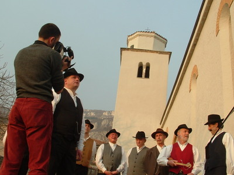

Udruga "Tondak" privela kraju snimanje prvog dijela "Žurnade," svojevrsne multimedijalne glazbene enciklopedije Istre
U malom selu na Ćićariji našli su se uz Danielea Pernića, Edija Cukerića i Mauricija Ferlina iz udruge "Tondak" vokalna skupina "Žejanski zvončari" i ženska vokalna skupina "Lanišće". Oni znaju zakantat' i zarozgat', ali u stručnoj terminologiji naziv za njihov pjev je bugarenje. Žejanci i Lanišćanke su možda jedini koji se bugarenjem još aktivno bave
 Lanišće - Udruga za očuvanje istarske narodne baštine simboličnog imena "Tondak" završila je višemjesečno snimanje glasova i pjeva istarskih kantadura. Zadnja lokacija na kojoj se snimao prvi dio sedmodijelnog projekta naziva "Žurnade," onaj posvećen prvenstveno istarskim kantadurima, bila je općina Lanišće. Uz predsjednika Danielea Pernića - sina pokojnog Renata Pernića koji je prikupio golem istarski glazbeni materijal za arhivu Radija Pule, a čiji sakupljački rad udruga "Tondak" nastavlja - udrugu čine Branimir Paić, dugogodišnji djelatnik Radija Pule i tonski snimatelj tradicionalne istarske glazbe, zatim Edi Cukerić, producent, ton majstor, aranžer, montažer, izdavač i također stalni suradnik Radija Pule, te Mauricio Ferlin, poznati dizajner, redatelj, snimatelj, scenograf, montažer i fotograf.
Projekt naziva "Žurnade" ambiciozan je pokušaj sakupljanja i objavljivanja istarske narodne glazbe u svim njenim nijansama. Materijal za prvi dio "Kantaduri" je prikupljen. Sljedeći projekti su "Istarska instrumentalna glazba" (dakle roženice, mih, mišlice, svirale, šurle, sopelice i tamburica), "Gunjci," "Harmonika Triestina," "Organić," "Talijanska narodna glazba" i "Klape". Udruga "Tondak" ima veliku ambiciju: stvoriti svojevrsnu enciklopediju narodne glazbe u Istri i to audio-vizualnu. Svaki dio projekta "Žurnade" pratit će objava dvostrukog audio CD-a, jednog DVD-a s intervjuima i snimkama izvedbi, te knjižice u tvrdom uvezu.
Najstariji živući kantadur Jelica Basanić iz Zartinja
- Počeli smo snimati nakon Tri kralja, a kako stvari stoje, trebali bismo biti gotovi zaključno s Uskrsom. Možemo reći da je ovo snimanje u Lanišću bio završni dan, ostalo nam je još nekoliko izvođača koje želimo snimiti, no većina posla je zgotovljena. Jako nam je žao što nismo uspjeli snimiti legendarnog Bepa, Josipa Jelčića Slavića koji je, nažalost, baš ovih dana umro. Čekali smo ga da se vrati iz Zagreba, znali smo da je bolestan, ali smo se ipak nadali da ćemo uspjeti snimiti i njegov glas koji je za ove krajeve uvijek bio važan. Trebao je biti najstariji izvođač koji bi se našao u našem projektu "Kantaduri". Kako sada stvari stoje, najstariji živući izvođač je Jelica Basanić iz Zartinja, koja ima 88 godina i koju smo danas također posjetili - kaže nam Edi Cukerić.
- Pokušali smo pokriti što veći teritorij i uključiti što više aktivnih i poluaktivnih kantadura, a mislim da smo u tome i uspjeli. Svi su nas dobro primili, na početku su malo sramežljivi, no kada ih opustite, niti ne primijete mikrofone i kameru - dodaje Daniele Pernić. Udruzi "Tondak" sada preostaje zatvoriti se u studio i napraviti odabir među stotinu snimljenih pjesama 70 izvođača.
U malom selu na Ćićariji našli su se tako, uz Pernića, Cukerića i Ferlina, vokalna skupina "Žejanski zvončari" i ženska vokalna skupina "Lanišće". Zvonari i Lanišćanke znaju zakantat' i zarozgat', ali u stručnoj terminologiji naziv za njihov pjev je bugarenje. Ćići vam neće nikada reći da bugare, taj je izraz njima stran, a u glazbenu terminologiju uveli su ga Ivan Matečić Ronjgov i Slavko Zlatić. Radi se o specifičnom dvoglasnom pjevanju gdje prvi glas uvodi skupinu u pjev, a ostali mu u drugom glasu odgovaraju.
U Lanišću je ove subote bilo vedro, a na obroncima je još bilo snijega koji je odbijao otopiti se. Pri našem dolasku "Žejanski zvonari" su nestrpljivo očekivali snimateljsku ekipu, a ne budi lijeni, već su ispitivali mještane gdje je u selu oštarija. No u Lanišću je jedino crkva bila otvorena, a do priželjkivane bukalete domaćega, bilega ili črnega, nije bilo moguće doći. No veseli se žejanski muževi nisu prepustili očaju već su pri dolasku ekipe spremno skoknuli do crkve i počeli snimanje intervjua. "Žejanske zvončare" čine Boris, Cvetko, Igor, Josip, Mauro i Željko, redom Doričići, te Ivan i Vilim Sanković, Nenad Strčić i Zdenko Uković.
Mali muč, aš ih kvariš!
- Počeo sam kantati kao mali. Stao bi se uz one starije i zakantao s njima, ali svi bi mi rekli: "Mali muč, aš ih kvariš!". Malo po malo sam naučio kako treba pjevati pa sam mogao i ja s njima koju zakantat'. Nekada se pjevalo svaki dan, nije trebala neka specijalna prigoda, pjevalo bi se kada se išlo na polje, kada se malo popilo i pojelo. Pjevalo se i na "botrinjama," na krstima, bermama i vjenčanjima. Dosta je bilo da se skupi troje i već bi se kantalo. Ono što se sada zove bugarenje mi smo zvali stari kanat, a mi se zovemo zvončari jer se kod nas ne pjeva već se zvoni. Naše su pjesme na starorumunjskom, a mi ga zovemo i žajanski. Tim se jezikom u našim krajevima pričalo stotinama godina, a sada je opstao ponajviše u pjesmama. Naša nakana je privući mlade da nastave tu tradiciju, moramo organizirati mlađu generaciju koja, na žalost, nije zainteresirana - kaže Josip Bepo Doričić, najstariji član "Žajanskih zvončara".
Najveći problem kod bugarenja, pa čak i kod bilo kojeg drugog pjevanja tradicionalnih napjeva, jest činjenica da nema nikoga da nastavi tu tradiciju. Mladu je generaciju jednostavno sram javno nastupati. Tako je u počecima bilo i sa ženskom vokalnom skupinom "Lanišće". Njih je 1976. okupila učiteljica glazbene kulture Mladenka Cotić Šverko. Trend bugarenja klizi opasno nizbrdo, a žene iz skupine "Lanišće" možda su jedine koje se bugarenjem aktivno bave. Prije njih aktivne su bile sada pokojne Anđela Poropat i Ana Penko. Skupina "Lanišće" se ponovo okupila 1993. i od onda nastavljaju istraživati tradiciju i modernizirati stari kanat. U skupini danas pjevaju Irena Šverko (Medica), Anita Cesar (Grbac), Mirjana Vratović i Branka Grbac Šverko. Bugarenje u principu izvode samo žene, stoga je primjer "Žejanskih zvončara" više iznimka nego li pravilo.
Nakon intervjua bilo je vrijeme da se snime stare kante. Mauricio Ferlin se namučio da snimi pjevanje u eksterijerima jer ga je crkveno zvono ometalo svakih petnaest minuta, a sunce je u međuvremenu naglo zalazilo. Ni zvučno zapisivanje nije prošlo bez problema, jer se hiperaktivan lanišćanski podmladak pobrinuo da svojom vikom i grudvanjem prekine snimanje u ključnim trenucima. No, negdje prije 22 sata, kad se nad Lanišćem spustila sablasna tišina, snimanje je uspješno zgotovljeno.
Tondak – špulet od roženice
Tondak je jedan od četiriju dijelova roženice, dakle njen špulet ili grlić, valjkasti drveni stupić u koji je ugrađen pisak. "Tondak" ujedno asocira i na ton, stoga je čitanje naziva udruge višeslojno, ali naglasak pada sigurno na zvuk odnosno glazbu. Za potrebe prvog dijela projekta nazvanog "Kantaduri," Edi, Daniele i Mauricio s Branimirom Paićem snimali su u Korenićima, Orbanićima, Paladnjakima, Svetvinčentu, Snašićima, Klarićima, Kapelici, Lanišću, Zartinju i na Monte Šerpu. Jasno je da su na te lokacije na snimanje došli i kantaduri iz obližnjih mjesta stoga je ova lista samo djelomična. U Paladnjake i Snašiće došlo je i do 20 izvođača, a u Orbaniće čak 27.
Piše Boris Vincek
Snimio Bojan Žižović
March 23, 2005
© 2005 Glas Istre